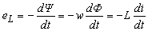
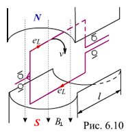
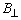

Закон электромагнитной индукции гласит, что при изменении магнитного поля, связанного с витками катушки, в последней наводится электродвижущая сила (ЭДС) индукции
, |
(6.6) |
|---|
Другими словами, если перемещать проводник в магнитном поле (то же, что если проводник неподвижен, а магнитный поток Ф изменяется во времени), в нем наводится ЭДС, равная произведению перпендикулярной к проводнику составляющей магнитной индукции
 , длине проводника l и скорости его перемещения v, т. е.
, длине проводника l и скорости его перемещения v, т. е.
eL =
lv. Направление ЭДС (тока) определяется известным правилом правой руки (рис. 6.10): если расположить правую руку так, чтобы м. с. л. входили в ладонь, а отогнутый большой палец указывал направление движения проводника, то остальные выпрямленные пальцы будут показывать направление ЭДС (тока).
Напряжение на зажимах идеальной индуктивной катушки (в которой активным сопротивлением проводов пренебрегают, т. е. R = 0)
uL » - eL = wdФ / dt = LdiL / dt уравновешивает ЭДС самоиндукции eL.
Закон электромагнитной индукции лежит в основе функционирования трансформаторов, генераторов электрического тока и других электромагнитных устройств.